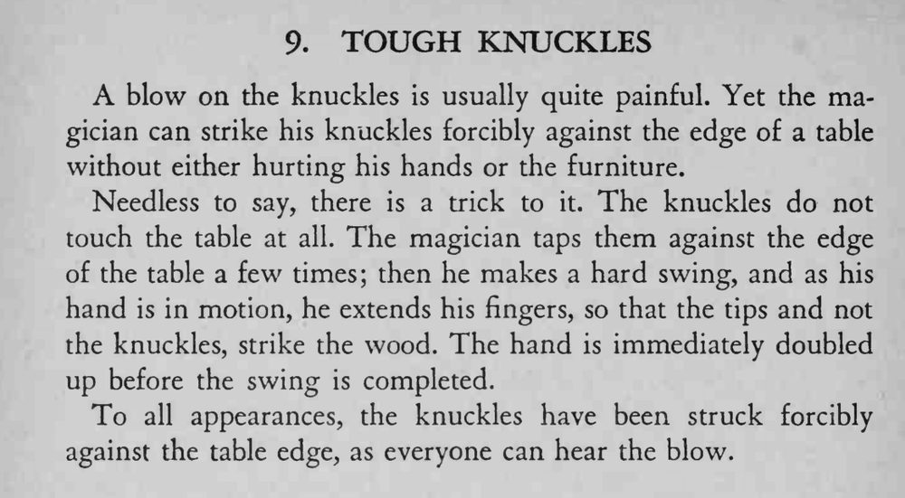

魔术师用指关节猛敲桌沿，声音响亮，手和桌子却都毫发无伤。
砸下去时手要真的快，靠速度和声音骗过眼睛。

A blow on the knuckles is usually quite painful. Yet the magician can strike his knuckles forcibly against the edge of a table without either hurting his hands or the furniture. Needless to say, there is a trick to it. The knuckles do not touch the table at all. The magician taps them against the edge of the table a few times; then he makes a hard swing, and as his hand is in motion, he extends his fingers, so that the tips and not the knuckles, strike the wood. The hand is immediately doubled up before the swing is completed. To all appearances, the knuckles have been struck forcibly against the table edge, as everyone can hear the blow.